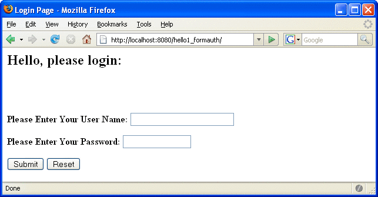
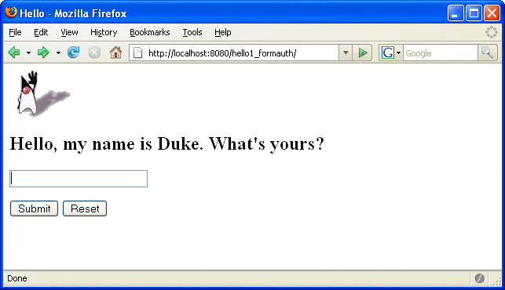
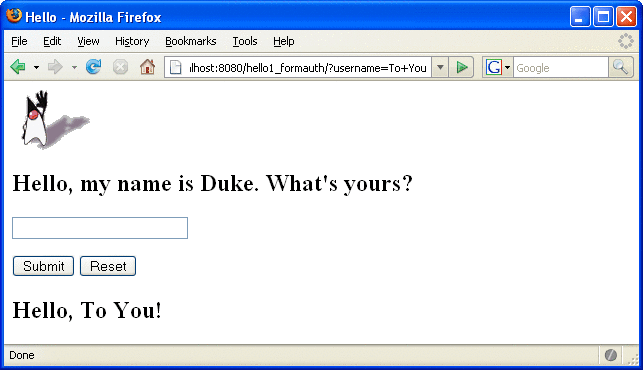
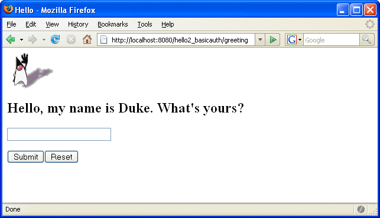
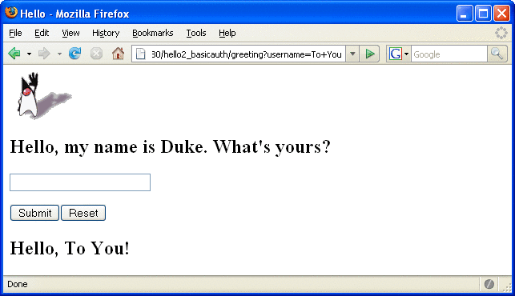

Examples: Securing Web Applications
There are several ways in which you can secure web applications. These include the following options:
You can define a user authentication method for an application in its deployment descriptor. Authentication verifies the identity of a user, device, or other entity in a computer system, usually as a prerequisite to allowing access to resources in a system. When a user authentication method is specified for an application, the web container activates the specified authentication mechanism when you attempt to access a protected resource.
The options for user authentication methods are discussed in Specifying an Authentication Mechanism. All of the example security applications use a user authentication method.
You can define a transport guarantee for an application in its deployment descriptor. Use this method to run over an SSL-protected session and ensure that all message content is protected for confidentiality or integrity. The options for transport guarantees are discussed in Specifying a Secure Connection.
When running over an SSL-protected session, the server and client can authenticate one another and negotiate an encryption algorithm and cryptographic keys before the application protocol transmits or receives its first byte of data.
SSL technology allows web browsers and web servers to communicate over a secure connection. In this secure connection, the data is encrypted before being sent, and then is decrypted upon receipt and before processing. Both the browser and the server encrypt all traffic before sending any data. For more information, see Establishing a Secure Connection Using SSL.
Digital certificates are necessary when running HTTP over SSL (HTTPS). The HTTPS service of most web servers will not run unless a digital certificate has been installed. Digital certificates have already been created for the Application Server.
The following examples use annotations, programmatic security, and/or declarative security to demonstrate adding security to existing web applications:
The following examples demonstrate adding basic authentication to an EJB endpoint or enterprise bean:
Example: Using Form-Based Authentication with a JSP Page
This example discusses how to use form-based authentication with a basic JSP page. With form-based authentication, you can customize the login screen and error pages that are presented to the web client for authentication of their user name and password. When a user submits their name and password, the server determines if the user name and password are those of an authorized user and, if authorized, sends the requested web resource. If the topic of authentication is new to you, please refer to the section Specifying an Authentication Mechanism.
In general, the following steps are necessary for adding form-based authentication to an unsecured JSP page, such as the one described in Web Modules. In the example application included with this tutorial, many of these steps have been completed for you and are listed here simply to show what needs to be done should you wish to create a similar application. The completed version of this example application can be found in the directory tut-install/javaeetutorial5/examples/web/hello1_formauth/.
The following steps describe how to set up your system for running the example applications, describe the sample application, and provide the steps for compiling, packaging, deploying, and testing the example application.
If you have not already done so, set up your system so that the Ant tool and/or NetBeans IDE will run properly. To do this, follow the instructions in Building the Examples. This step is necessary to set the properties that are specific to your installation of the Application Server and Java EE 5 Tutorial.
If you have not already done so, add an authorized user to the Application Server. For this example, add users to the file realm of the Application Server and assign the user to the group user. This topic is discussed more in Adding Authorized Roles and Users.
Create a web module as described in Web Modules. The subsequent steps discuss adding security to this basic application. The resulting application is found in the directory tut-install/javaeetutorial5/examples/web/hello1_formauth/.
Create the login form and login error form pages. Files for the example application can be viewed at tut-install/javaeetutorial5/examples/web/hello1_formauth/web. These pages are discussed in Creating the Login Form and the Error Page.
Create a web.xml deployment descriptor and add the appropriate security elements (the application on which this section is based did not originally require a deployment descriptor.) The deployment descriptor for the example application can be viewed at tut-install/javaeetutorial5/examples/hello1_formauth/web/WEB-INF. The security elements for the web.xml deployment descriptor are described in Specifying a Security Constraint.
Map the role name defined for this resource (loginUser) to a group of users defined on the Application Server. For more information on how to do this, read Mapping Application Roles to Application Server Groups.
Build, package, deploy, and run the web application by following the steps in Building, Packaging, and Deploying the Form-Based Authentication Example Using NetBeans IDE or Building, Packaging, and Deploying the Form-Based Authentication Example Using Ant.
Test the web client, following the steps in Testing the Form-Based Authentication Web Client.
Creating a Web Client for Form-Based Authentication
The web client in this example is a standard JSP page, and annotations are not used in JSP pages because JSP pages are compiled as they are presented to the browser. Therefore, none of the code that adds form-based authentication to the example is included in the web client. The code for the JSP page used in this example, hello1_formauth/web/index.jsp, is exactly the same as the code used for the unsecured JSP page from the example application at tut-install/javaeetutorial5/examples/web/hello1/web/index.jsp.
The information that adds form-based authentication to this example is specified in the deployment descriptor. This information is discussed in Specifying a Security Constraint.
Creating the Login Form and the Error Page
When using form-based login mechanisms, you must specify a page that contains the form you want to use to obtain the user name and password, as well as which page to display if login authentication fails. This section discusses the login form and the error page used in this example. The section Specifying a Security Constraint shows how you specify these pages in the deployment descriptor.
The login page can be an HTML page, a JSP page, or a servlet, and it must return an HTML page containing a form that conforms to specific naming conventions (see the Java Servlet 2.5 specification for more information on these requirements). To do this, include the elements that accept user name and password information between <form></form> tags in your login page. The content of an HTML page, JSP page, or servlet for a login page should be coded as follows:
<form method=post action="j_security_check" >
<input type="text" name= "j_username" >
<input type="password" name= "j_password" >
</form>The full code for the login page used in this example can be found at tut-install/javaeetutorial5/examples/web/hello1_formauth/web/logon.jsp. An example of the running login form page is shown later in Figure 30-6. Here is the code for this page:
<html>
<head>
<title>Login Page</title>
</head>
<h2>Hello, please log in:</h2>
<br><br>
<form action="j_security_check" method=post>
<p><strong>Please Enter Your User Name: </strong>
<input type="text" name="j_username" size="25">
<p><p><strong>Please Enter Your Password: </strong>
<input type="password" size="15" name="j_password">
<p><p>
<input type="submit" value="Submit">
<input type="reset" value="Reset">
</form>
</html>The login error page is displayed if the user enters a user name and password combination that is not authorized to access the protected URI. For this example, the login error page can be found at tut-install/javaeetutorial5/examples/web/hello1_formauth/web/logonError.jsp. For this example, the login error page explains the reason for receiving the error page and provides a link that will allow the user to try again. Here is the code for this page:
<html>
<head>
<title>Login Error</title>
</head>
<body>
<c:url var="url" value="/index.jsp"/>
<h2>Invalid user name or password.</h2>
<p>Please enter a user name or password that is authorized to access this
application. For this application, this means a user that has been created in the
<code>file</code> realm and has been assigned to the <em>group</em> of
<code>user</code>. Click here to <a href="${url}">Try Again</a></p>
</body>
</html>
Specifying a Security Constraint
This example takes a very simple JSP page-based web application and adds form-based security to this application. The JSP page is exactly the same as the JSP page used in the example described in Web Modules. All security for this example is declared in the deployment descriptor for the application. A security constraint is defined in the deployment descriptor that tells the server to send a login form to collect user data, verify that the user is authorized to access the application, and, if so, display the JSP page to the user.
If this client were a web service endpoint and not a JSP page, you could use annotations to declare security roles and to specify which roles were allowed access to which methods. However, there is no resource injection in JSP pages, so you cannot use annotations and must use the equivalent deployment descriptor elements.
Deployment descriptor elements are described in Declaring Security Requirements in a Deployment Descriptor.
The following sample code shows the deployment descriptor used in this example of form-based login authentication, which can be found in tut-install/javaeetutorial5/examples/web/hello1_formauth/web/WEB-INF/web.xml.
<!-- FORM-BASED LOGIN AUTHENTICATION EXAMPLE -->
<?xml version="1.0" encoding="UTF-8"?>
<web-app xmlns="http://java.sun.com/xml/ns/javaee" version="2.5"
xmlns:xsi="http://www.w3.org/2001/XMLSchema-instance"
xsi:schemaLocation="http://java.sun.com/xml/ns/javaee
http://java.sun.com/xml/ns/javaee/web-app_2_5.xsd">
<display-name>hello1_formauth</display-name>
<servlet>
<display-name>index</display-name>
<servlet-name>index</servlet-name>
<jsp-file>/index.jsp</jsp-file>
</servlet>
<security-constraint>
<display-name>SecurityConstraint</display-name>
<web-resource-collection>
<web-resource-name>WRCollection</web-resource-name>
<url-pattern>/*</url-pattern>
</web-resource-collection>
<auth-constraint>
<role-name>loginUser</role-name>
</auth-constraint>
<user-data-constraint>
<transport-guarantee>NONE</transport-guarantee>
</user-data-constraint>
</security-constraint>
<login-config>
<auth-method>FORM</auth-method>
<form-login-config>
<form-login-page>/logon.jsp</form-login-page>
<form-error-page>/logonError.jsp</form-error-page>
</form-login-config>
</login-config>
<security-role>
<role-name>loginUser</role-name>
</security-role>
</web-app>More description of the elements that declare security in a deployment descriptor can be found in Specifying Security Constraints.
Protecting Passwords with SSL
Passwords are not protected for confidentiality with HTTP basic or form-based authentication, meaning that passwords sent between a client and a server on an unprotected session can be viewed and intercepted by third parties. To overcome this limitation, you can run these authentication protocols over an SSL-protected session and ensure that all message content is protected for confidentiality.
A <transport-guarantee> element indicates whether or not the protected resources should travel over protected transport. For simplicity, this example does not require protected transport, but in a real world application, you would want to set this value to CONFIDENTIAL to ensure that the user name and password are not observed during transmission. When running on protected transport, you can run the application over the secure SSL protocol, https, and specify the secure port where your SSL connector is created (the default for the Application Server is 8181). If you do not specify the HTTPS protocol, the server will automatically redirect the application to the secure port.
Adding Authorized Roles and Users
To authenticate a user and allow that user access to protected resources on the Application Server, you must link the roles defined in the application to the users defined for the Application Server.
An application may define security roles, which are a logical grouping of users, classified by common traits such as customer profile or job title.
The Application Server has multiple realms, each of which generally includes a database of authorized users, their passwords, and one or more logical groups to which the each user belongs.
When an application is deployed, the application-specific security roles are mapped to security identities in the runtime environment, such as principals (identities assigned to users as a result of authentication) or groups. Based on this mapping, a user who has been assigned a certain security role has associated access rights to a web application deployed onto a server.
As shown in the deployment descriptor for this example application, the security constraint specifies that users assigned to the role of loginUser are authorized to access any of the files in the hello1_formauth application. In this example, when a resource that is constrained by this same security constraint is accessed, for example, hello1_formauth/web/index.jsp, the Application Server sends the login form, receives the login information, and checks to see if the user is in a group that has been mapped to the role of loginUser. If the user name and password are those of an authorized user, access to the resource is granted to the requester.
To set up users for this example application, follow these steps:
Using the Admin Console, create a user in the file realm of the Application Server and assign that user to the group user. Make sure to note the user name and password that you enter in this step so that you can use it for testing the application later (these fields are case-sensitive). If you need help with the steps required to accomplish this task, read Managing Users and Groups on the Application Server for more information.
Map the application security role of loginUser to the group of user that has been configured on the Application Server. For more information on how to do this mapping, read Mapping Application Roles to Application Server Groups.
Mapping Application Roles to Application Server Groups
Map the role of loginUser defined in the application to the group of user defined on the Application Server by adding a security-role-mapping element to the sun-web.xml runtime deployment descriptor file. To deploy a WAR on the Application Server, the WAR file must contain a runtime deployment descriptor. The runtime deployment descriptor is an XML file that contains information such as the context root of the web application and the mapping of the portable names of an application’s resources to the Application Server’s resources.
The runtime deployment descriptor for this example, tut-install/javaeetutorial5/examples/web/hello1_formauth/web/WEB-INF/sun-web.xml, looks like this:
<?xml version="1.0" encoding="UTF-8"?>
<!DOCTYPE sun-web-app PUBLIC
"-//Sun Microsystems, Inc.//DTD Application Server 9.0 Servlet 2.5//EN"
"http://www.sun.com/software/appserver/dtds/sun-web-app_2_5-0.dtd">
<sun-web-app>
<context-root>/hello1_formauth
</context-root>
<security-role-mapping> <role-name>loginUser</role-name> <group-name>user</group-name> </security-role-mapping>
</sun-web-app>
Building, Packaging, and Deploying the Form-Based Authentication Example Using NetBeans IDE
To build, package, and deploy this application using NetBeans IDE, follow these steps:
Follow the instructions in Building the Examples if you have not already done so. This step is necessary to provide the Ant targets with the location of your tutorial and Application Server installations.
Add users to the file realm of the Application Server as described in Adding Authorized Roles and Users if you have not already done so.
Open the project in NetBeans IDE by selecting File→Open Project.
Browse to the tut-install/javaeetutorial5/examples/web/hello1_formauth/ directory.
Make sure that Open as Main Project is selected.
Select Open Project.
If you are prompted to regenerate the build-impl.xml file, select the Regenerate button.
Right-click hello1_formauth in the Projects pane, then select Clean and Build.
Right-click hello1_formauth in the Projects pane, then select Undeploy and Deploy.
Follow the steps in Testing the Form-Based Authentication Web Client.
Building, Packaging, and Deploying the Form-Based Authentication Example Using Ant
To build, package, and deploy this application using the Ant tool, follow these steps:
Follow the instructions in Building the Examples if you have not already done so. This step is necessary to provide the Ant targets with the location of your tutorial and Application Server installations.
Add users to the file realm of the Application Server as described in Adding Authorized Roles and Users if you have not already done so.
From a terminal window or command prompt, change to the tut-install/javaeetutorial5/examples/web/hello1_formauth/ directory.
Enter the following command at the terminal window or command prompt:
ant
This target will spawn any necessary compilations, copy files to the tut-install/javaeetutorial5/examples/web/hello1_formauth/build/ directory, create the WAR file, and copy it to the tut-installjavaeetutorial5/examples/web/hello1_formauth/dist/ directory.
Deploy the WAR named hello1_formauth.war onto the Application Server using Ant by entering the following command at the terminal window or command prompt:
ant deploy
Follow the steps in Testing the Form-Based Authentication Web Client.
Testing the Form-Based Authentication Web Client
To run the web client, follow these steps:
Open a web browser.
Enter the following URL in your web browser:
http://localhost:8080/hello1_formauth
Note - If you set the transport guarantee to CONFIDENTIAL as discussed in Protecting Passwords with SSL, you must load the application in a web browser using https for the protocol, the HTTPS port that you specified during installation for the port (by default this port is 8181), and the context name for the application you wish to run. For the form-based authentication example, you could run the example using the following URL: https://localhost:8181/hello1_formauth.
The login form displays in the browser, as shown in Figure 30-6.
Enter a user name and password combination that corresponds to a user that has already been created in the file realm of the Application Server and has been assigned to the group of user, as discussed in Adding Authorized Roles and Users.
Click the Submit button. Form-based authentication is case-sensitive for both the user name and password, so enter the user name and password exactly as defined for the Application Server.
If you entered My_Name as the name and My_Pwd for the password, the server returns the requested resource if all of the following conditions are met:
There is a user defined for the Application Server with the user name of My_Name.
The user with the user name of My_Name has a password of My_Pwd defined for the Application Server.
The user My_Name with the password My_Pwd is assigned to the group of user on the Application Server.
The role of loginUser, as defined for the application, is mapped to the group of user, as defined for the Application Server.
When these conditions are met, and the server has authenticated the user, the application will display as shown in Figure 30-7.
Enter your name and click the Submit button. Because you have already been authorized, the name you enter in this step does not have any limitations. You have unlimited access to the application now.
The application responds by saying “Hello” to you, as shown in Figure 30-8.
Figure 30-6 Form-Based Login Page
Figure 30-7 Running Web Application
Figure 30-8 The Running Form-Based Authentication Example
Note - For repetitive testing of this example, you may need to close and reopen your browser. You should also run the ant clean and ant undeploy commands to ensure a fresh build if using the Ant tool, or select Clean and Build then Undeploy and Deploy if using NetBeans IDE.
Example: Basic Authentication with a Servlet
This example discusses how to use basic authentication with a servlet. With basic authentication of a servlet, the web browser presents a standard login dialog that is not customizable. When a user submits their name and password, the server determines if the user name and password are those of an authorized user and sends the requested web resource if the user is authorized to view it. If the topic of authentication is new to you, please refer to the section Specifying an Authentication Mechanism.
In general, the following steps are necessary for adding basic authentication to an unsecured servlet, such as the one described in Web Modules. In the example application included with this tutorial, many of these steps have been completed for you and are listed here simply to show what needs to be done should you wish to create a similar application. The completed version of this example application can be found in the directory tut-install/javaeetutorial5/examples/web/hello2_basicauth/.
The following steps describe how to set up your system for running the example applications, describe the sample application, and provide the steps for compiling, packaging, deploying, and testing the example application.
If you have not already done so, set up your system so that the Ant tool and/or NetBeans IDE will run properly. To do this, follow the instructions in Building the Examples. This step is necessary to set the properties that are specific to your installation of the Application Server and Java EE 5 Tutorial.
If you have not already done so, add an authorized user to the Application Server. For this example, add users to the file realm of the Application Server and assign the user to the group user. This topic is discussed more in Adding Authorized Roles and Users.
Create a web module as described in Web Modules for the servlet example, hello2. The subsequent steps discuss adding security to this basic application. The files for this example application are in tut-install/javaeetutorial5/examples/web/hello2_basicauth/.
Declare the roles that will be used in this application. For this example, this is done by adding the @DeclareRoles annotation to GreetingServlet.java. This code is shown in Declaring Security Roles.
Add the appropriate security elements to the web.xml deployment descriptor. The deployment descriptor for the example application can be viewed at tut-install/javaeetutorial5/examples/web/hello2_basicauth/web/WEB-INF/web.xml. The security elements are described in Specifying the Security Constraint.
Map the role name defined for this resource (helloUser) to a group of users defined on the Application Server. For more information on how to do this, read Mapping Application Roles to Application Server Groups.
Build, package, and deploy the web application by following the steps in Building, Packaging, and Deploying the Servlet Basic Authentication Example Using NetBeans IDE or Building, Packaging, and Deploying the Servlet Basic Authentication Example Using Ant.
Run the web application by following the steps described in Running the Basic Authentication Servlet.
If you have any problems running this example, refer to the troubleshooting tips in Troubleshooting the Basic Authentication Example.
Declaring Security Roles
There are two annotations that can be used with servlets: @DeclareRoles and @RunAs. In this example, the @DeclareRoles annotation is used to specify which roles are referenced in this example.
The following section of the tut-install/javaeetutorial5/examples/web/hello2_basicauth/src/servlets/GreetingServlet.java file contains the code necessary to declare that the role of helloUser is used in this application:
package servlets;
import java.io.*;
import java.util.*;
import java.sql.*;
import javax.servlet.*;
import javax.servlet.http.*;
import javax.annotation.security.DeclareRoles;
/**
* This is a simple example of an HTTP Servlet that can only be accessed
* by an authenticated user. It responds to the GET
* method of the HTTP protocol.
*/
@DeclareRoles("helloUser")
public class GreetingServlet extends HttpServlet {
public void doGet (HttpServletRequest request,
HttpServletResponse response)
throws ServletException, IOExceptionYou could also declare security roles using the <security-role> element in the deployment descriptor. If you prefer to declare security roles this way, read Declaring Roles Using Deployment Descriptor Elements.
Specifying the Security Constraint
This example takes a very simple servlet-based web application and adds basic authentication to this application. The servlet is basically the same as the servlet used in the example described in Web Modules, with the exception of the annotations added and discussed in Declaring Security Roles.
The security constraint for this example is declared in the application deployment descriptor. The security constraint tells the server or browser to perform the following tasks:
Send a standard login dialog to collect user name and password data
Verify that the user is authorized to access the application
If authorized, display the servlet to the user
Deployment descriptors elements are described in Declaring Security Requirements in a Deployment Descriptor.
The following sample code shows the security elements for the deployment descriptor used in this example of basic authentication, which can be found in tut-install/javaeetutorial5/examples/web/hello2_basicauth/web/WEB-INF/web.xml.
<security-constraint>
<display-name>SecurityConstraint</display-name>
<web-resource-collection>
<web-resource-name>WRCollection</web-resource-name>
<url-pattern>/greeting</url-pattern>
</web-resource-collection>
<auth-constraint>
<role-name>helloUser</role-name>
</auth-constraint>
<user-data-constraint>
<transport-guarantee>NONE</transport-guarantee>
</user-data-constraint>
</security-constraint>
<login-config>
<auth-method>BASIC</auth-method>
<realm-name>file</realm-name>
</login-config>More description of the elements that declare security in a deployment descriptor can be found in Specifying Security Constraints.
Protecting Passwords with SSL
Passwords are not protected for confidentiality with HTTP basic or form-based authentication, meaning that passwords sent between a client and a server on an unprotected session can be viewed and intercepted by third parties. To overcome this limitation, you can run these authentication protocols over an SSL-protected session and ensure that all message content is protected for confidentiality.
A <transport-guarantee> element indicates whether or not the protected resources should travel over protected transport. For simplicity, this example does not require protected transport, but in a real world application, you would want to set this value to CONFIDENTIAL to ensure that the user name and password are not observed during transmission. When running on protected transport, you need to use the secure SSL protocol, https, and specify the secure port where your SSL connector is created (the default for the Application Server is 8181).
Adding Authorized Roles and Users
To authenticate a user and allow that user access to protected resources on the Application Server, you must link the roles defined in the application to the users defined for the Application Server.
A security role, which is defined at the application level, is a logical grouping of users, classified by common traits such as customer profile or job title.
The Application Server has multiple realms, each of which generally includes a database of authorized users, their passwords, and one or more logical groups to which the each user belongs.
When an application is deployed, the application-specific security roles are mapped to security identities in the runtime environment, such as principals (identities assigned to users as a result of authentication) or groups. Based on this mapping, a user who has been assigned a certain security role has associated access rights to a web application deployed onto a server.
As shown in the deployment descriptor for this example application, the security constraint specifies that users assigned to the role of helloUser are authorized to access the URL pattern /greeting. In this example, when this resource (because it is constrained by a security constraint) is accessed, the Application Server sends a default login dialog, receives the login information, and checks to see if the user is in a group that has been mapped to the role of helloUser. If the user name and password are those of an authorized user, access to the resource is granted to the requester.
To set up users for this example application, follow these steps:
If you have not already done so, create a user in the file realm of the Application Server and assign that user to the group user. Make sure to note the user name and password that you enter in this step so that you can use it for testing the application later. If you need help with the steps required to accomplish this task, read Managing Users and Groups on the Application Server for more information.
Map the application security role of helloUser to the group of user that has been configured on the Application Server. For more information on how to do this mapping, read Mapping Application Roles to Application Server Groups.
Mapping Application Roles to Application Server Groups
Map the role of helloUser defined in the application to the group of user defined on the Application Server by adding a security-role-mapping element to the sun-web.xml runtime deployment descriptor file. The runtime deployment descriptor is an XML file that contains information such as the context root of the web application and the mapping of the portable names of an application’s resources to the Application Server’s resources.
The runtime deployment descriptor for this example, tut-install/javaeetutorial5/examples/web/hello2_basicauth/web/WEB-INF/sun-web.xml, looks like this:
<sun-web-app>
<context-root>/hello2_basicauth</context-root>
<security-role-mapping>
<role-name>helloUser</role-name>
<group-name>user</group-name>
</security-role-mapping>
</sun-web-app>
Building, Packaging, and Deploying the Servlet Basic Authentication Example Using NetBeans IDE
To build, package, and deploy the web/hello2_basicauth example application using NetBeans IDE, follow these steps:
If you have not already done so, follow the instructions in Building the Examples. This step is necessary to provide the Ant targets with the location of your tutorial and Application Server installations.
If you have not already done so, add authorized users to the file realm of the Application Server as described in Adding Authorized Roles and Users.
Open the project in NetBeans IDE by selecting File→Open Project.
Browse to the tut-installjavaeetutorial5/examples/web/hello2_basicauth/ directory.
Make sure that Open as Main Project is selected.
Select Open Project.
Right-click hello2_basicauth in the Projects pane, then select Clean and Build.
Right-click hello2_basicauth in the Projects pane, then select Undeploy and Deploy.
To run the servlet, follow the steps in Running the Basic Authentication Servlet.
Building, Packaging, and Deploying the Servlet Basic Authentication Example Using Ant
To build, package, and deploy the web/hello2_basicauth example using the Ant tool, follow these steps:
If you have not already done so, follow the instructions in Building the Examples. This step is necessary to provide the Ant targets with the location of your tutorial and Application Server installations.
If you have not already done so, add authorized users to the file realm of the Application Server as described in Adding Authorized Roles and Users.
From a terminal window or command prompt, change to the tut-install/javaeetutorial5/examples/web/hello2_basicauth/ directory.
Build and package the web application by entering the following command at the terminal window or command prompt:
ant
This command uses web.xml and sun-web.xml files, located in the tut-install/javaeetutorial5/examples/web/hello2_basicauth/web/WEB-INF/ directory.
To deploy the example using Ant, enter the following command at the terminal window or command prompt:
ant deploy
The deploy target in this case gives you an incorrect URL to run the application. To run the application, please use the URL shown in Running the Basic Authentication Servlet.
To run the web application, follow the steps in Running the Basic Authentication Servlet.
Running the Basic Authentication Servlet
To run the web client, follow these steps:
Open a web browser.
Enter the following URL in your web browser:
http://localhost:8080/hello2_basicauth/greeting
If you set the transport guarantee to CONFIDENTIAL as discussed in Protecting Passwords with SSL, you must load the application in a web browser using https for the protocol, the HTTPS port that you specified during installation for the port (by default this port is 8181), and the context name for the application you wish to run. For the basic authentication example, you could run the example using the following URL: https://localhost:8181/hello2_basicauth/greeting.
A default login form displays. Enter a user name and password combination that corresponds to a user that has already been created in the file realm of the Application Server and has been assigned to the group of user, as discussed in Adding Authorized Roles and Users.
Basic authentication is case-sensitive for both the user name and password, so enter the user name and password exactly as defined for the Application Server.
If you entered My_Name as the name and My_Pwd for the password, the server returns the requested resource if all of the following conditions are met:
There is a user defined for the Application Server with the user name of My_Name.
The user with the user name of My_Name has a password of My_Pwd defined for the Application Server.
The user My_Name with the password My_Pwd is assigned to the group of user on the Application Server.
The role of helloUser, as defined for the application, is mapped to the group of user, as defined for the Application Server.
When these conditions are met, and the server has authenticated the user, the application will display as shown in Figure 30-9.
Enter your name and click the Submit button. Because you have already been authorized, the name you enter in this step does not have any limitations. You have unlimited access to the application now.
The application responds by saying “Hello” to you, as shown in Figure 30-10.
Figure 30-9 Running the Application
Figure 30-10 The Running Basic Authentication Example
Note - For repetitive testing of this example, you may need to close and reopen your browser. You should also run the ant clean and ant undeploy targets or the NetBeans IDE Clean and Build option to get a fresh start.
Troubleshooting the Basic Authentication Example
When doing iterative development with this web application, follow these steps if you are using NetBeans IDE:
Close your web browser.
Clean and recompile the files from the previous build by right-clicking hello2_basicauth and selecting Clean and Build.
Redeploy the application by right-clicking hello2_basicauth and selecting Undeploy and Deploy.
Open your web browser and reload the following URL:
http://localhost:8080/hello2_basicauth/greeting
Follow these steps if you are using the Ant tool:
Close your web browser.
Undeploy the web application. To undeploy the application, use the following command in the directory:
ant undeploy
Clean out files from the previous build, using the following command:
ant clean
Recompile, repackage, and redeploy the application, using the following commands:
ant ant deploy
Open your web browser and reload the following URL:
http://localhost:8080/hello2_basicauth/greeting
Example: Basic Authentication with JAX-WS
This section discusses how to configure a JAX-WS-based web service for HTTP basic authentication. When a service that is constrained by HTTP basic authentication is requested, the server requests a user name and password from the client and verifies that the user name and password are valid by comparing them against a database of authorized users.
If the topic of authentication is new to you, refer to the section titled Specifying an Authentication Mechanism. For an explanation of how basic authentication works, see Figure 30-2.
For this tutorial, you will add the security elements to the JAX-WS service and client; build, package, and deploy the service; and then build and run the client application.
This example service was developed by starting with an unsecured service, helloservice, which can be found in the directory tut-install/javaeetutorial5/examples/jaxws/helloservice and is discussed in Creating a Simple Web Service and Client with JAX-WS. You build on this simple application by adding the necessary elements to secure the application using basic authentication. The example client used in this application can be found at tut-install/javaeetutorial5/examples/jaxws/simpleclient-basicauth, which only varies from the original simpleclient application in that it uses the helloservice-basicauth endpoint instead of the helloservice endpoint. The completed version of the secured service can be found at tut-install/javaeetutorial5/examples/jaxws/helloservice-basicauth.
In general, the following steps are necessary to add basic authentication to a JAX-WS web service. In the example application included with this tutorial, many of these steps have been completed for you and are listed here simply to show what needs to be done should you wish to create a similar application.
Create an application like the one in Creating a Simple Web Service and Client with JAX-WS. The example in this tutorial starts with that example and demonstrates adding basic authentication of the client to this application. The completed version of this application is located in the directories tut-install/javaeetutorial5/examples/jaxws/helloservice-basicauth and tut-install/javaeetutorial5/examples/jaxws/simpleclient-basicauth.
If the port value was set to a value other than the default (8080), follow the instructions in Setting the Port to update the example files to reflect this change.
If you have not already done so, follow the steps in Building the Examples for information on setting up your system to run the example.
If you have not already done so, add a user to the file realm and specify user for the group of this new user. Write down the user name and password so that you can use them for testing this application in a later step. If you have not already completed this step, refer to the section Managing Users and Groups on the Application Server for instructions.
Modify the source code for the service, Hello.java, to specify which roles are authorized to access the sayHello (String name) method. This step is discussed in Annotating the Service.
Add security elements that specify that basic authentication is to be performed to the application deployment descriptor, web.xml. This step is discussed in Adding Security Elements to the Deployment Descriptor.
Modify the runtime deployment descriptor, sun-web.xml, to map the role used in this application (basicUser) to a group defined on the Application Server (user). This step is discussed in Linking Roles to Groups.
Build, package, and deploy the web service. See Building and Deploying helloservice with Basic Authentication Using NetBeans IDE or Building and Deploying helloservice with Basic Authentication Using Ant for the steps to accomplish this.
Build and run the client application. See Building and Running the helloservice Client Application with Basic Authentication Using NetBeans IDE or Building and Running the helloservice Client Application with Basic Authentication Using Ant for the steps to accomplish this.
Annotating the Service
In this example, annotations are used to specify which users are authorized to access which methods of this service. In this simple example, the @RolesAllowed annotation is used to specify that users in the application role of basicUser are authorized access to the sayHello(String name) method. This application role must be linked to a group of users on the Application Server. Linking the roles to groups is discussed in Linking Roles to Groups.
The source code for the original /helloservice application was modified as shown in the following code snippet (modifications in bold). This file can be found in the following location:
tut-install/javaeetutorial5/examples/jaxws/helloservice-basicauth/src/java/helloservice/ basicauth/endpoint/Hello.java
The code snippet is as follows:
package helloservice.basicauth.endpoint;
import javax.jws.WebMethod;
import javax.jws.WebService;
import javax.annotation.security.RolesAllowed;
@WebService()
public class Hello {
private String message = new String("Hello, ");
@WebMethod()
@RolesAllowed("basicUser")
public String sayHello(String name) {
return message + name + ".";
}
}The @RolesAllowed annotation specifies that only users in the role of basicUser will be allowed to access the sayHello (String name) method. An @RolesAllowed annotation implicitly declares a role that will be referenced in the application, therefore, no @DeclareRoles annotation is required.
Adding Security Elements to the Deployment Descriptor
To enable basic authentication for the service, add security elements to the application deployment descriptor, web.xml. The security elements that need to be added to the deployment descriptor include the <security-constraint> and <login-config>elements. These security elements are discussed in more detail in Declaring Security Requirements in a Deployment Descriptor and in the Java Servlet Specification. Code in bold is added to the original deployment descriptor to enable HTTP basic authentication. The resulting deployment descriptor is located in tut-install/javaeetutorial5/examples/jaxws/helloservice-basicauth/web/WEB-INF/web.xml.
<?xml version="1.0" encoding="UTF-8"?><web-app xmlns="http://java.sun.com/xml/ns/javaee" version="2.5" xmlns:xsi="http://www.w3.org/2001/XMLSchema" xsi:schemaLocation="http://java.sun.com/xml/ns/javaee http://java.sun.com/xml/ns/javaee/web-app_2_5.xsd"> <display-name>HelloService</display-name> <listener> <listener-class> com.sun.xml.ws.transport.http.servlet.WSServletContextListener </listener-class> </listener> <servlet> <display-name>HelloService</display-name> <servlet-name>HelloService</servlet-name> <servlet-class>com.sun.xml.ws.transport.http.servlet.WSServlet</servlet-class> </servlet> <servlet-mapping> <servlet-name>HelloService</servlet-name> <url-pattern>/hello</url-pattern> </servlet-mapping> <session-config> <session-timeout>30</session-timeout> </session-config> <security-constraint> <display-name>SecurityConstraint</display-name> <web-resource-collection> <web-resource-name>WRCollection</web-resource-name> <url-pattern>/hello</url-pattern> </web-resource-collection> <auth-constraint> <role-name>basicUser</role-name> </auth-constraint> <user-data-constraint> <transport-guarantee>NONE</transport-guarantee> </user-data-constraint> </security-constraint> <login-config> <auth-constraint>BASIC</auth-constraint> <realm-name>file</realm-name> </login-config> </web-app>
Linking Roles to Groups
The role of basicUser has been defined for this application, but there is no group of basicUser defined for the Application Server. To map the role that is defined for the application (basicUser) to a group that is defined on the Application Server (user), add a <security-role-mapping> element to the runtime deployment descriptor, sun-web.xml, as shown below (modifications from the original file are in bold). The resulting runtime deployment descriptor is located in tut-install/javaeetutorial5/examples/jaxws/helloservice-basicauth/web/WEB-INF/sun-web.xml.
<?xml version="1.0" encoding="UTF-8"?>
<!DOCTYPE sun-web-app PUBLIC
"-//Sun Microsystems, Inc.//DTD Application Server 9.0 Servlet 2.5//EN"
"http://www.sun.com/software/appserver/dtds/sun-web-app_2_5-0.dtd">
<sun-web-app error-url="">
<context-root>/helloservice</context-root>
<class-loader delegate="true"/>
<security-role-mapping> <role-name>basicUser</role-name> <group-name>user</group-name> </security-role-mapping>
</sun-web-app>
Building and Deploying helloservice with Basic Authentication Using NetBeans IDE
To build, package, and deploy the jaxws/helloservice-basicauth example using NetBeans IDE, follow these steps, or the steps described in Building, Packaging, and Deploying the Service.
If you have not already done so, set up your system for running the tutorial examples by following the instructions in Building the Examples.
If you haven’t already done so, set up an authorized user on the Application Server, assigned to the group user, as described in Managing Users and Groups on the Application Server.
In NetBeans IDE, select File→Open Project.
In the Open Project dialog, navigate to tut-install/javaeetutorial5/examples/jaxws/.
Select the helloservice-basicauth folder.
Check the Open as Main Project and Open Required Projects check boxes.
Click Open Project.
In the Projects tab, right-click the helloservice-basicauth project and select Clean and Build.
In the Projects tab, right-click the helloservice-basicauth project and select Undeploy and Deploy.
This step builds and packages the application into helloservice-basicauth.war, located in tut-install/javaeetutorial5/examples/jaxws/helloservice-basicauth/dist, and deploys this war file to your Application Server instance.
Building and Deploying helloservice with Basic Authentication Using Ant
To build, package, and deploy the jaxws/helloservice-basicauth example using the Ant tool, follow these steps, or the steps described in Building, Packaging, and Deploying the Service.
If you have not already done so, set up your system for running the tutorial examples by following the instructions in Building the Examples.
If you haven’t already done so, set up an authorized user on the Application Server, assigned to the group user, as described in Managing Users and Groups on the Application Server.
From a terminal window or command prompt, go to the tut-install/javaeetutorial5/examples/jaxws/helloservice-basicauth/ directory.
Build, package, and deploy the JAX-WS service by entering the following at the terminal window or command prompt in the helloservice-basicauth/ directory:
ant all
You can test the service by selecting it in the Admin Console and choosing Test. For more information on how to do this, read Testing the Service without a Client.
Building and Running the helloservice Client Application with Basic Authentication Using NetBeans IDE
To build and run the client application, simpleclient-basicauth, using NetBeans IDE, follow these steps. The helloservice-basicauth service must be deployed onto the Application Server before compiling the client files. For information on deploying the service, read Building and Deploying helloservice with Basic Authentication Using NetBeans IDE.
In NetBeans IDE, select File→Open Project.
In the Open Project dialog, navigate to tut-install/javaeetutorial5/examples/jaxws/.
Select the simpleclient-basicauth folder.
Check the Open as Main Project and Open Required Projects check boxes.
Click Open Project.
In the Projects tab, right-click the simpleclient-basicauth project and select Clean and Build.
In the Projects tab, right-click the simpleclient-basicauth project and select Run.
You will be prompted for your user name and password.
Enter the user name and password of a user that has been entered into the database of users for the file realm and has been assigned to the group of user.
If the username and password you enter are authorized, you will see the output of the application client in the Output pane.
The client displays the following output:
[echo] running application client container. [exec] Retrieving the port from the following service: helloservice.basicauth.endpoint.HelloService@c8769b [exec] Invoking the sayHello operation on the port. [exec] Hello, No Name.
Building and Running the helloservice Client Application with Basic Authentication Using Ant
To build and run the client application, simpleclient-basicauth, using the Ant tool, follow these steps. The secured service must be deployed onto the Application Server before you can successfully compile the client application. For more information on deploying the service, read Building and Deploying helloservice with Basic Authentication Using Ant.
Build the client by changing to the directory tut-install/examples/jaxws/simpleclient-basicauth/ and entering the following at the terminal window or command prompt:
ant
This command calls the default target, which builds and packages the application into a JAR file, simpleclient-basicauth.jar, located in the /dist directory.
Run the client by entering the following at the terminal window or command prompt:
ant run
A Login for User dialog displays.
Enter a user name and password that correspond to a user set up on the Application Server with a group of user. Click OK.
The client displays the following output:
[echo] running application client container. [exec] Retrieving the port from the following service: helloservice.basicauth.endpoint.HelloService@c8769b [exec] Invoking the sayHello operation on the port. [exec] Hello, No Name.